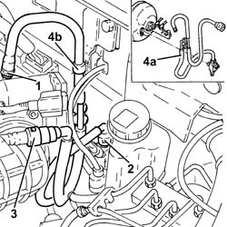

3330D28 VACUUM PIPE COMPLETE WITH SINGLE -ACTING VALVES RR
- Path
- Procedures > 33 BRAKING SYSTEM > 3330 HYDRAULIC BRAKING SYSTEM > 3330D BRAKE VACUUM SYSTEM > 3330D28 VACUUM PIPE COMPLETE WITH SINGLE -ACTING VALVES RR
- Kind
- repair procedure (removal / refitting; the operation number is the code)
- Applies to
- engines: 1.8 T.SPARK, 2.0 JTS; all production periods
- Interactive page
- https://sloeber94.github.io/elrnDB-aGt/en/#/125001353
Applies to: engines: 1.8 T.SPARK, 2.0 JTS; all production periods
 Removing
Removing
 Refitting
RefittingProceed with removal
Op. 1016A40 IGNITION COIL COVER ON CYLINDER HEAD- R+R
1. Loosen the band and disconnect the vacuum pipe from the air chamber.
2. Disconnect the rapid connector for the vacuum pipe from the pressure sensor on the brake servo.
3. Disconnect the intermediate rapid connector for the vacuum pipe.
4. Remove the vacuum pipe complete with single-acting valves (4a) after having released it from the band (4b).

Applies to: engines: 1.8 T.SPARK, 2.0 JTS; all production periods
Refitting
RemovingPlace the vacuum pipe, complete with single-acting valves, back in its housing and secure it to the band.
Connect the intermediate rapid connector for the vacuum pipe.
Connect the rapid connector for the vacuum pipe to the pressure sensor on the brake servo.
Connect the vacuum pipe to the air chamber and tighten the band.
Proceed with refitting